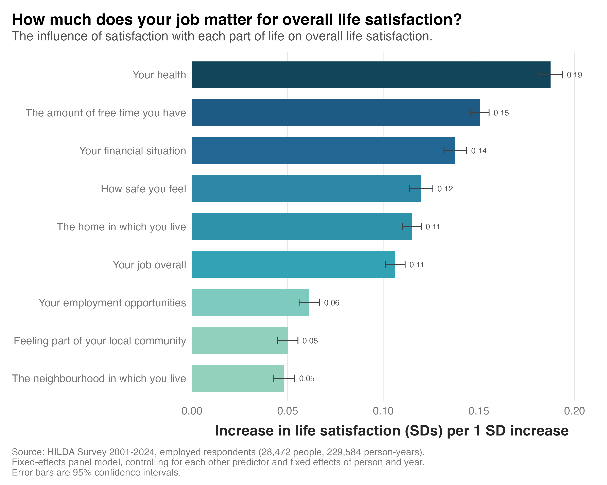

Each year, the Household, Income, and Labour Dynamics in Australia survey asks people how satisfied they are with their job, and with other parts of their life like their health, their finances, their free time and their home. It also asks how satisfied they are with their life as a whole. That means we can look at the effect of job satisfaction on life satisfaction, and compare it with the effect of satisfaction with those other parts of life.
I used data from 28,472 employed Australians who took part in the survey between 2001 and 2024. I used a fixed-effects model, where each person serves as their own baseline. So rather than comparing different people, the model looks at whether people are more satisfied with their life in years when they're more satisfied with a particular part of it. All nine parts of life were in the model together, so each effect is over and above the other eight.
The figure below shows the results. Each bar shows how much life satisfaction increases, in standard deviation units, when satisfaction with that part of life increases by one standard deviation.

Here's what I found:
1) Health has the biggest effect on life satisfaction (0.19), followed by the amount of free time people have (0.15) and their financial situation (0.14).
2) Job satisfaction sits in the middle of the pack (0.11), about the same as satisfaction with your home (0.11) and how safe you feel (0.12).
3) Other predictors have weaker influences, including satisfaction with employment opportunities, feeling part of your local community, or your neighbourhood (all 0.05 to 0.06).
Some of these relationships are also non-linear. HILDA's satisfaction scale runs from 0 ("totally dissatisfied") to 10 ("totally satisfied"). Health and financial situation show diminishing returns. In other words, moving from dissatisfied to moderately satisfied with your health or finances is associated with a bigger improvement in overall life satisfaction than moving from moderately satisfied to totally satisfied.
Job satisfaction and free time show the opposite pattern. They have more impact the more satisfied you already are. In other words, moving from moderately satisfied to totally satisfied with your job or free time is associated with a bigger improvement in overall life satisfaction than moving from dissatisfied to moderately satisfied.
I think this says something about how we think about work. A lot of the conversation focuses on protecting people from bad jobs. But these results suggest the bigger wellbeing improvements may come from work that is genuinely fulfilling as opposed to work that's just 'not bad'. That applies both to people choosing where to work, and to organisations thinking about what kind of work they offer.